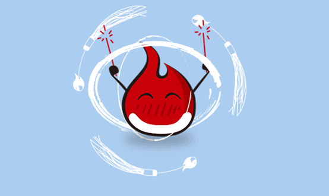
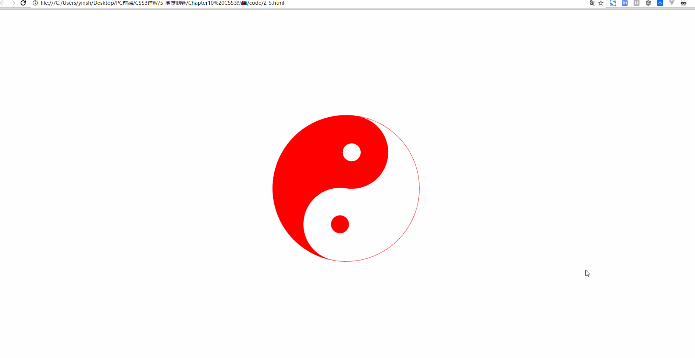
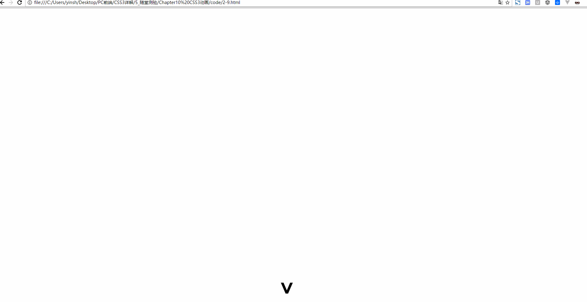
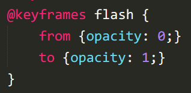

Css3文本与字体
文本阴影
h1 {
text-shadow: 5px 5px 5px red;
}word-break换行：
h1:nth-child(1) { word-break: normal; } /*英文：一行放不下时整个单词换行*/
h1:nth-child(2) { word-break: break-all; } /*英文：一行放不下时把单词拆开换行*/
h1:nth-child(3) { word-break: keep-all; } /*英文：与normal类似*/
h1:nth-child(4) { word-break: normal; } /*中文：正常*/
h1:nth-child(5) { word-break: break-all; } /*中文：正常*/
h1:nth-child(6) { word-break: keep-all; } /*中文：标点符号之后换行*/word-wrap换行(中文无效)：
h1:nth-child(1) { word-wrap: normal; } /*英文：不换行*/
h1:nth-child(2) { word-wrap: break-word; } /*英文：换行*/文本溢出时处理：
h1:nth-child(1) { text-overflow: clip; } /*隐藏*/
h1:nth-child(2) { text-overflow: ellipsis; } /*省略号显示*/
h1:nth-child(3) { text-overflow: '>>'; } /*显示指定字符：只火狐有效*/自定义字体
.ttf最常见字体，RAW格式，不做优化
.otf格式
.woff格式，web最佳格式，压缩版本
.eot格式，IE专用格式
.svg
@font-face {
font-family: 'myfont';
src: url('font/myFont.eot');
src: url('font/myFont.eot?#iefix') format('embedded-opentype'),
url('font/myFont.ttf') format('truetype'),
url('font/myFont.woff') format('woff'),
url('font/myFont.svg#myFont') format('svg');
}
h1 {
font-family: 'myfont';
}获取特殊字体格式文件的网址：
https://www.fontsquirrel.com/tools/webfont-generator
css3转换
2d旋转transform:rotate(deg)
.pic1 {
-webkit-transform: rotate(7deg);
-moz-transform: rotate(7deg);
-ms-transform: rotate(7deg);
-o-transform: rotate(7deg);
transform: rotate(7deg);
}2d平移transform: translate()
div > img {
transform: translateX(200px);
}
div > img {
transform: translateY(200px);
}
div > img {
transform: translate(200px, 100px);
}2d缩放transform: scale()
div > img {
transform: scaleX(.5);
}
div > img {
transform: scaleY(.5);
}
div > img {
transform: scale(.5, .5);
}2d斜切Skew()
div > img {
transform: skew(15deg, 15deg); /*当只有一个参数的时候，第二个参数默认为0deg*/
}
div > img {
transform: skewX(15deg); /*逆时针正，顺时针负*/
}
div > img {
transform: skewY(15deg);
}3D旋转
div > img {
transform: rotateZ(45deg);
}
div > img {
transform: rotate3d(1, 1, 1, 45deg); /*正：顺时针；负：逆时针*/
}3D平移
div > img {
transform: translateZ(200px);
}
div > img {
transform: translate3d(200px, 200px, 200px);
}3D缩放
div > img {
transform: scaleZ(.5);
}
div > img {
transform: scale3d(.5, .5, .5);
}更改原点位置
div > img {
transform: rotate3d(1, 1, 1, 45deg);
transform-origin: left top 0;
}Matrix_translate
transform: matrix(1, 0, 0, 1, x, y)等同于transform: translate(x, y)
div:nth-child(1) > img {
transform: matrix(1, 0, 0, 1, 30, 30);
}
div:nth-child(2) > img {
transform: translate(30px, 30px);
}Matrix_ scale
transform: matrix(sx, 0, 0, sy, 0, 0)等同于transform: scale(sx, sy)
div:nth-child(1) > img {
transform: matrix(.5, 0, 0, .5, 0, 0);
}
div:nth-child(2) > img {
transform: scale(.5, .5);
}Matrix_ skew
transform: matrix(1, tanθy, tanθx, 1, 0, 0)等同于transform: skew(θxdeg, θydeg)
div:nth-child(1) > img {
transform: matrix(1, .5774, .5774, 1, 0, 0);
}
div:nth-child(2) > img {
transform: skew(30deg, 30deg);
}Matrix_ rotate
transform: matrix(cosθ, sinθ, -sinθ, cosθ, 0, 0)等同于transform: rotate(θdeg)
div:nth-child(1) > img {
transform: matrix(.7071, .7071, -0.7071, .7071, 0, 0);
}
div:nth-child(2) > img {
transform: rotate(45deg);
}Matrix镜像对称：
matrix((1-k*k) / (1+k*k), 2k / (1 + k*k), 2k / (1 + k*k), (k*k - 1) / (1+k*k), 0, 0)
如果对称轴y=-x，即斜率k=-1，代入公式计算：
matrix((1- -1*-1) / (1+ -1*-1)， 2*-1 / (1 + -1*-1)，2*-1 / (1 + -1*-1)，(-1*-1 - 1) / (1+-1*-1), 0, 0)即得到matrix((1- 1) / (1+ 1)， -2 / (1 +1)，-2 / (1 + 1)，(1 - 1) / (1+1), 0, 0)=matrix(0，-1，-1，0, 0, 0)
有个可爱的小伙伴做的计算网址：
https://www.zhangxinxu.com/study/201206/css3-transform-matrix-mirror.html
div:nth-child(1) > img {
transform: matrix3d(.5, 0, 0, 0, 0, .5, 0, 0, 0, 0, .5, 0, 0, 0, 0, 1);
}
div:nth-child(2) > img {
transform: scale3d(.5, .5, .5);
}transform-style: preserve-3d;
实现父元素对子元素的3D遮罩效果
Demo：
<!DOCTYPE html>
<html lang="en">
<head>
<meta charset="UTF-8">
<title>transform style</title>
<style type="text/css">
body { background: #abcdef; }
div { position: relative; width: 760px; height: 760px; margin: auto;
-webkit-transform-style: preserve-3d;
-moz-transform-style: preserve-3d;
-ms-transform-style: preserve-3d;
-o-transform-style: preserve-3d;
transform-style: preserve-3d;
}
div > .inner { position: absolute; top: 0; right: 0; bottom: 0; left: 0; width: 100%; height: 100%; margin: auto; transform: rotateY(-45deg); background: url(images/circle_inner.png) no-repeat center center; }
div > .middle { position: absolute; top: 0; right: 0; bottom: 0; left: 0; width: 100%; height: 100%; margin: auto; transform: rotateX(-45deg); background: url(images/circle_middle.png) no-repeat center center; }
div > .outer { position: absolute; top: 0; right: 0; bottom: 0; left: 0; width: 100%; height: 100%; margin: auto; transform: rotateZ(-45deg); background: url(images/circle_outer.png) no-repeat center center; }
div > .imooc { position: absolute; top: 0; right: 0; bottom: 0; left: 0; width: 100%; height: 100%; margin: auto; background: url(images/imooc.png) no-repeat center center; }
</style>
</head>
<body>
<div>
<div class="inner"></div>
<div class="middle"></div>
<div class="outer"></div>
<div class="imooc"></div>
</div>
</body>
</html>
perspective: 500px;透视距离，perspective属性指定了观察者与z=0平面的距离，使具有三维位置变换的元素产生透视效果。z>0的三维元素比正常大，而z<0时则比正常小，大小程度由该属性的值决定
perspective-origin: bottom;透视点的位置，默认情况下，消失点位于元素的中心，但是可以通过设置perspective-origin属性来改变其位置
div { position: relative; width: 760px; height: 760px; margin: auto;
-webkit-transform-style: preserve-3d;
-moz-transform-style: preserve-3d;
-ms-transform-style: preserve-3d;
-o-transform-style: preserve-3d;
transform-style: preserve-3d;
-webkit-perspective: 500px;
-moz-perspective: 500px;
-ms-perspective: 500px;
-o-perspective: 500px;
perspective: 500px;
-webkit-perspective-origin: bottom;
-moz-perspective-origin: bottom;
-ms-perspective-origin: bottom;
-o-perspective-origin: bottom;
perspective-origin: bottom;
}元素背面是否可见
backface-visibility: hidden;
backface-visibility: visible;
css3过渡
transition: transform，如果不指定默认是all
div { width: 800px; height: 800px; margin: auto; transform: rotate(0deg); background: url(images/imooc.png) no-repeat center center, url(images/circle_outer.png) no-repeat center center;
-webkit-transition: transform 2s ease-in-out 1s;
-moz-transition: transform 2s ease-in-out 1s;
-ms-transition: transform 2s ease-in-out 1s;
-o-transition: transform 2s ease-in-out 1s;
transition: transform 2s ease-in-out 1s;
}
div:hover { cursor: pointer; transform: rotate(180deg);
-webkit-transition: transform 2s ease-in-out 1s;
-moz-transition: transform 2s ease-in-out 1s;
-ms-transition: transform 2s ease-in-out 1s;
-o-transition: transform 2s ease-in-out 1s;
transition: transform 2s ease-in-out 1s;
}transition-timing-function：
#div1 {transition-timing-function: linear;} /*线性*/
#div2 {transition-timing-function: ease;} /*平滑*/
#div3 {transition-timing-function: ease-in;} /*慢入*/
#div4 {transition-timing-function: ease-out;} /*慢出*/
#div5 {transition-timing-function: ease-in-out;} /*慢入慢出*/简写：属性+动画时间+运动函数+延迟时间
transition: transform 2s ease-in-out 1s;当鼠标经过一个元素的时候，该元素翻转360°并且放大一倍显示
<!DOCTYPE html>
<html lang="en">
<head>
<meta charset="UTF-8">
<title>demo</title>
<style>
div {
font-size: 14px;
font-weight: bold;
line-height: 50px;
position: fixed;
top: 0;
right: 0;
bottom: 0;
left: 0;
width: 200px;
height: 50px;
margin: auto;
cursor: pointer;
text-align: center;
background: #abcdef;
/*此处写代码*/
-webkit-transform:rotate(0deg) scale(1);
-webkit-transition:transform 1s;
}
/*此处写代码*/
div:hover{
-webkit-transform:rotate(360deg) scale(2);
-webkit-transition:transform 1s;
}
</style>
</head>
<body>
<div>www.test.com</div>
</html>
Css3动画
animation-delay 属性定义动画什么时候开始，单位可以是秒（s）或毫秒（ms），允许负值，-2s使动画马上开始，但会跳过2s进入动画
animation-iteration-count: infinite;无限循环/具体的数值
旋转太极：
<!DOCTYPE html>
<html lang="en">
<head>
<meta charset="UTF-8">
<title>demo</title>
<style type="text/css">
div {
position: absolute;
top: 0;
right: 0;
bottom: 0;
left: 0;
box-sizing: border-box;
width: 400px;
height: 400px;
margin: auto;
border: 1px solid red;
border-bottom: 200px solid red;
border-radius: 50%;
transform-origin: 50% 50%;
animation-name: rotate;
animation-duration: 5s;
animation-timing-function: linear;
animation:rotate 5s linear infinite;
}
div::before{
content:" ";
width:60px;
height:60px;
border-radius:50%;
position: absolute;
top:100px;
left:0;
background-color: red;
border: 70px solid white;
}
div::after{
content:" ";
width:60px;
height:60px;
border-radius:50%;
position: absolute;
top:100px;
right:0;
background-color: white;
border: 70px solid red;
}
@keyframes rotate{
from{transform:rotate(0deg);}
to{transform:rotate(360deg);}
}
</style>
</head>
<body>
<div></div>
</body>
</html>
animation-direction与循环搭配，如果动画被设置为只播放一次，该属性将不起作用：
animation-direction: normal; /*正常*/
animation-direction: reverse; /*反向*/
animation-direction: alternate; /*先正向再反向*/
animation-direction: alternate-reverse; /*先反向再正向*/动画暂停或未播放时的样式
animation-fill-mode: none; /*默认*/
animation-fill-mode: forwards; /*动画结束时的状态*/
animation-fill-mode: backwords; /*动画开始时的状态*/
animation-fill-mode: both; /*动画开始或结束的状态*/animation-play-state: paused; /*动画暂停*/
animation-play-state: running; /*动画正在运行*/鼠标悬停时暂停：
div {
cursor: pointer;
-webkit-animation-play-state: running;
animation-play-state: running;
}
div:hover {
cursor: pointer;
-webkit-animation-play-state: paused;
animation-play-state: paused;
}Animation简写：
Animation:name duration timing-function delay iteration-count direction fill-mode play-state;滚屏网页都有一个提示滚屏箭头动画效果
<!DOCTYPE html>
<html lang="en">
<head>
<meta charset="UTF-8">
<title>2-9</title>
<style type="text/css">
div {
font-family: Arial;
font-size: 72px;
font-weight: bold;
position: fixed;
right: 0;
left: 0;
width: 30px;
height: 30px;
margin: auto;
transform: rotate(90deg);
cursor:pointer;
animation:my_move .5s ease-in-out .5s infinite alternate ;
}
@keyframes my_move{
from{bottom:200px;}
to{bottom:100px;}
}
</style>
</head>
<body>
<div>></div>
</body>
</html>
定义元素忽明忽暗的闪烁效果
